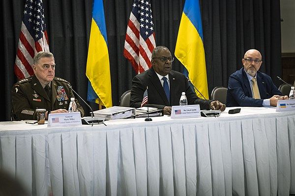
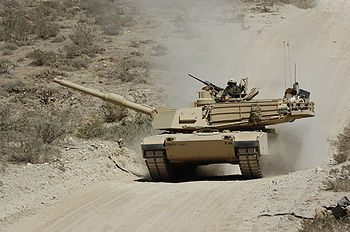
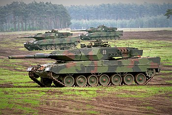

Поточні події
Російсько-українська війнаАктуальні новини
- На авіабазі Рамштайн відбулася зустріч «Рамштайн-8» , у якій взяли участь генсек НАТО та міністри оборони близько 50 країн (20 січня)
- Під прапорами Грузії та України у Тбілісі відбулося триденне прощання та поховання Вахтанга Кікабідзе (17—19 січня)
- У результаті падіння гелікоптера у Броварах загинули 14 людей, серед яких одна дитина, міністр внутрішніх справ України Денис Монастирський, його перший заступник Євгеній Єнін, державний секретар МВС Юрій Лубкович. Обов'язки міністра внутрішніх справ покладені на Ігоря Клименка (18 січня)
- В Непалі при заході на посадку розбився пасажирський літак ATR 72 авіакомпанії Yeti (15 січня)
- Збройні сили РФ завдали ракетного удару по житловому будинку в Дніпрі, знищивши під'їзд багатоквартирного житлового будинку з численними жертвами серед цивільних (на фото, 14 січня)
Інші події
Зустрічі у форматі «Рамштайн»
Зустрічі у форматі «Рамштайн» (англ. Ramstein Meetings) — серія дипломатичних зустрічей міністрів оборони кількох десятків країн світу, що відбулися з метою синхронізації та прискорення надання військової зброї Україні для протистояння російському повномасштабному вторгненню та обговорення питань підтримки України після закінчення війни.[1][2]
Зустрічі отримали назву за місце проведення першої — базі Повітряних сил США «Рамштайн» у німецькому місті Рамштайн-Мізенбах, що у федеральній землі Рейнланд-Пфальц. В подальшому зустрічі відбувалися в різних форматах (наприклад, онлайн[3][4]) та в різних місцях (зокрема третя та шоста зустрічі були проведені у Брюсселі[5]), але отримували неофіційні назви «Рамштайн-2», «Рамштайн-3» тощо в рамках «Консультативної групи з питань оборони України» (англ. Ukraine Defense Contact Group (UDCG))[4][6].
Зміст
- 1 Перша зустріч
- 2 Подальші зустрічі
-
- Рамштайн-2 (23 травня 2022 року, онлайн)
- Рамштайн-3 (15 червня 2022 року, Брюссель)
- Рамштайн-4 (20 липня 2022 року, онлайн)
- Рамштайн-5 (8 вересня 2022 року, База ПС США «Рамштайн»)
- Рамштайн-6 (12 жовтня 2022 року, Брюссель)
- Рамштайн-7 (16 листопада 2022 року, онлайн)
- Рамштайн-8 (20 січня 2023 року, База ПС США «Рамштайн»)
- 3 Учасники
- 4 Результати зустрічей
- 5 Оцінки
- 6 Див. також
- 7 Примітки
- 8 Посилання
Перша зустріч
22 квітня 2022 року голова «Пентагону», Секретар оборони США, Ллойд Остін запросив представників 40 держав-союзників зустрітися в Німеччині, щоб обговорити довгострокові потреби України в сфері безпеки під час повномасштабного вторгнення Російської Федерації в Україну. Речник Департаменту оборони США, Джон Кірбі заявив, що міністри оборони та старші генерали членів НАТО й не членів НАТО прийняли запрошення на зустріч у вівторок, 26 квітня, на контрольованій США авіабазі «Рамштайн» у Німеччині. Він назвав зустріч «консультацією», яка розглядає питання: «як партнери України можуть сприяти зміцненню її військової сили після закінчення війни?». Це включає каталогізацію промислового потенціалу партнерів, щоби побачити, як їхні виробники зброї можуть і далі допомагати Україні. Кірбі наголосив, що зустріч не проходила під егідою НАТО[7], однак держави-члени Альянсу були представлені на ній у повному складу. Українську делегацію очолив Міністр оборони України Олексій Резніков, який за столом переговорів зайняв місце поруч із головуючим, Ллойдом Остіном. Перемовини тривали сім годин. Після закінчення зустрічі Остін заявив, що НАТО та союзники намагатимуться допомогти Україні з найнеобхіднішим якомога швидше.[8] За словами прессекретаря Білого дому Джен Псакі під час зустрічі понад 30 країн зголосилися виділити більш за 5 мільярдів доларів США.[9] Сторони також домовилися про організацію нової «Консультативної групи з питань оборони України».[10][11] , яка зустрічатиметься щомісяця — онлайн чи наживо. Метою зустрічей буде координація нагальної допомоги Україні.[8]
Подальші зустрічи
Рамштайн-2 (23 травня 2022 року, онлайн)
21 травня офіційний представник Департаменту оборони США, Джон Кірбі, заявив, що 23 травня, за ініціативи очільника Пентагону, Ллойда Остіна, представники понад 40 країн світу візьмуть участь у другому засіданні контактної групи з оборони України — так званій «Рамштайн-2» в онлайн-форматі. Перед тим відбулася ще й телефонна розмова міністрів Резнікова й Остіна.[3] Під час проведення зустрічі до групи вперше приєдналися міністри з Австрії, Боснії й Герцеговини, Колумбії та невизнаної Республіки Косово.[12] Олексій Резніков після зустрічі назвав її «справжньою коаліцією вільного світу на підтримку України» і зауважив, що серед континентів не представлена тільки Антарктида. У питаннях озброєння ним було підкреслено прогрес у постачанні артилерії 155-мм калібру, посилення берегової оборони тощо.[13]
Рамштайн-3 (15 червня 2022 року, Брюссель)
15 червня у Брюсселі було заплановано провести третю зустріч у форматі «Рамштайн». Вона відбулася у штаб-квартирі НАТО під час вуличних боїв за Сєвєродонецьк у ході великої «битви за Донбас». Загалом в бельгійській столиці зібралися міністри оборони близько 50 країн, а також представники НАТО та Європейського Союзу.[5] Також під час третьої зустрічі до групи приєдналися міністри з Еквадору (Луїс Лара Харамільо), Молдови (Анатолій Носатий[ro]) і Грузії (Джуаншер Бурчуладзе).[14] Результатом цієї зустрічі стало постачання далекобійних реактивних систем залпового вогню (РСЗВ) M270 та їхнього полегшеного варіанту M142 HIMARS, а також іншого озброєння.[15]
Рамштайн-4 (20 липня 2022 року, онлайн)
Про четверту зустріч Контактної групи з питань оборони України, стало відомо зі звіту про телефонну розмову міністрів оборони Ллойда Остіна й Олексія Резнікова. Напередодні розмови, 8 липня, США оголосили про новий пакет допомоги Україні у розмірі $400 млн, в рамках якого планувалося передати 1000 високоточних боєприпасів для 155-мм артилерії. Зустріч була запланована на 20 липня у віртуальному режимі.[4] За результатами проведеної зустрічі Остін повідомив, що низка країн, крім передачі озброєнь, забезпечує навчання й тренування українських військових для роботи з ними. Деякі країни відновлюють українську техніку, а хтось постачає запчастини та інші бойові засоби.[16] Резніков, зі своєї сторони, повідомив, що «позитивним сигналом зустрічі є нові зобов'язання партнерів, які стосуються і суші, і моря, і неба», однак не уточнював деталі.[6] Станом на липень 30 з 50 країн-учасниць «Рамштайну» постачали летальну зброю в Україну. А з країни ЄС, за словами міністра закордонних справ України, Дмитра Кулеби, це не робили лише Австрія (через нейтральний статус) та Угорщина.[15]
Рамштайн-5 (8 вересня 2022 року, База ПС США «Рамштайн»)
8 вересня відбулася п'ята зустріч країн-союзниць, які допомагають Україні у війні з Росією. На ній США оголосили про стратегію довготривалої підтримки, НАТО — про «зимовий пакет» допомоги, Німеччина пообіцяла забезпечити навчання з розмінування, а Норвегія — передати 160 ракет.[15]
Рамштайн-6 (12 жовтня 2022 року, Брюссель)
12 жовтня у Брюсселі відбулася шоста зустріч. Їй передував масований ракетний обстріл України 10 жовтня. За підсумками глава Департаменту оборони США заявив, що Сполучені Штати нададуть Україні системи ППО настільки швидко, наскільки це можливо. Міністерство оборони Німеччини пообіцяло Україні самохідні артилерійські установки PzH 2000 та реактивні системи залпового вогню MARS II (тобто європейську модифікацію РСЗВ M270). Нідерланди заявили, що уряд країни надасть Києву ракети для систем протиповітряної оборони на суму $15 млн. Крім того, про додатковий пакет допомоги на суму $47 млн оголосила Канада: до нього увійшли артилерійські снаряди, зимові форма та обладнання, камери для дронів та обладнання для супутникового зв'язку.[15]
Рамштайн-7 (16 листопада 2022 року, онлайн)
Зустріч відбулась 16 листопада 2022 року. За її результатами Україна отримала системи протиповітряної оборони, снаряди для РСЗВ, ствольну артилерію, снаряди, а також зимове умундирування.[17]
Рамштайн-8 (20 січня 2023 року, База ПС США «Рамштайн»)
Під час телемарафону «Єдині новини» голова українського міністерства оборони Резніков заявив, що восьма зустріч у форматі «Рамштайн» перенесена на січень 2023 року. Він пов'язав це з новорічними святами, але запевнив, що переговори у двосторонньому форматі продовжуються з усіма партнерами України[17]. Врешті-решт засідання Консультативної групи з питань оборони України відбулося 20 січня.[15] на авіабазі «Рамштайн». Зустріч відбулася на фоні падіння гелікоптера у Броварах, в якій загинув міністр внутрішніх справ України Денис Монастирський[18] і ракетного удару Росії по житловому будинку у Дніпрі. тож Остін повідомив, що для захисту повітряного простору України Німеччина, США та Нідерланди запланували надати зенітно-ракетні комплекси Patriot, а Канада — ракети NASAMS та боєприпаси. Окрім того, Марк Міллі повідомив, що президент США підписав 30-й пакет матеріально-технічної допомоги на $2,5 млрд, а Німеччина зі свого боку готова надати €1 млрд (загалом було надано близько €3,3 млрд). Німецькі гроші мають, зокрема, стосуватися також і протиповітряної оборони. Однією з центральних тем зустрічі була можливість передачі Україні сучасних танків (або американських M1 Abrams або німецьких Leopard 2). Голова Пентагону заявив, що у нього немає ніяких заяв з приводу поставки танків Abrams: «Думаю, ви чули заяву міністра оборони Німеччини про те, що не було ухвалене рішення про надання танків Leopard. Ми зосередилися на тому, щоб переконати, що Україна має спроможності, необхідні для успіху прямо зараз. Ми маємо це вікно можливостей між теперішнім часом та весною, коли вони можуть почати свій контрнаступ. Ми змогли зібрати надзвичайну бойову потужність і ці пакети включають також і танки. Польща продовжує пропонувати надати танки. Також інші країни надають бойові машини.» Справді, за підсумками зустрічі було прийнято рішення передати Україні бронетехніку, артилерію та тисячі снарядів.[19]
 